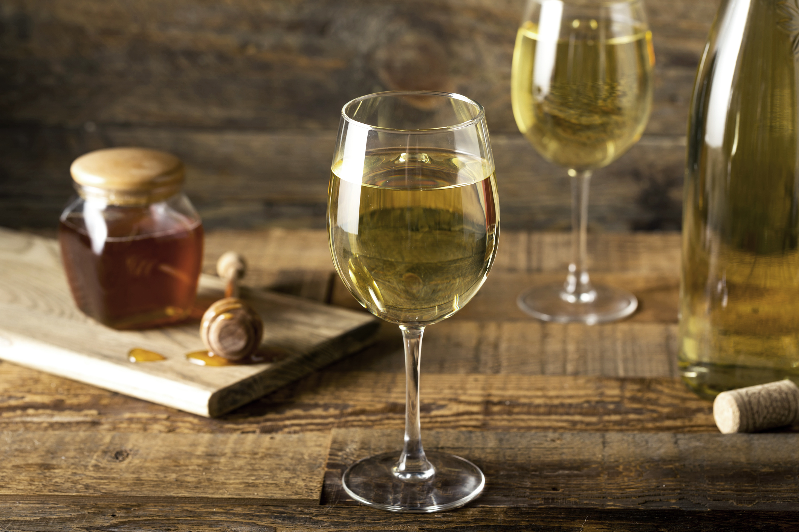

Trebbiano is an Italian wine grape and one of the most widely planted grape types worldwide. The vine was cultivated in different parts of Italy, leading to another Trebbiano grape variety emerging in Bologna in the 13th century.
It can be fresh and fruity but does not keep for very long. Trebbiano, also known as ugni blanc, has many other names reflecting a family of local subtypes, particularly in Italy and parts of France.
Trebbiano goes by many names in Italy, including Procanico, Brucanico and Santoro. The Trebbiano family is responsible for around a third of all white wine covering Italy.
The grape is a high cropping type and quite heavy. It is late budding but needs sun to ripen fully, though it has adapted to many growing conditions. The best way to identify Trebbiano would be that the tips of its clusters often split in two.
The wine from the Trebbiano grape resembles a thinner, unoaked Chardonnay and is served as a table wine. Besides being used to make white wine, Trebbiano is also an ingredient when creating brandies like Cognac and Armagnac.
Trebbiano wine is usually greenish yellow on the eye, full-bodied and with a strong balance of tropical fruit, spice, and minerality. Some descriptions of tastes are light bodied with minimal aroma, fruity flavour with a finish of almond to give a refreshing touch to this wine family.
This popular grape displays the taste of peach, green apple, and lemon, giving hints of minerality and fresh herbs. It's found in still or dry styles and features refreshing acidity and gives a bitter almond taste on the finish. The alcohol levels in Trebbiano range from 11.5% to 13.5%.
For the most part, Trebbiano is refreshing and citrusy, although it is not too intense, permitting it to complement many foods. Balsamic vinegar comes from the juices of the Trebbiano grape, which age slowly in barrels to create a sweet, sticky texture of authentic Balsamic.
You will find that most Italian white wines are cheap and cheerful. They are drunk during the first year after the harvest. Most white wines made around the world are the same. Nevertheless, Italy produces several stunning white wines that develop depth and complexity as they age.
Sometimes, during the process, Trebbiano grapes undergo fermentation with their skins on, just like red wine grapes. During maceration, the juice gets a visible orange colour from the skins, transforming the Trebbiano and giving it an orange colour. Despite this, Trebbiano retains all characteristics of a typical white.
Due to its freshness, harmony, and delicacy, Trebbiano can be matched with versatility and can be an aperitif. It is a perfect wine for a menu with dishes with a delicate flavour, such as seafood salads, fish-based meals, and simply seasoned pasta dishes.
When serving Trebbiano wine, a Tulip-shaped glass is recommended. This allows the wine to hit the centre of your mouth, avoiding the sides of the glass where acidity is less pleasant. With a smaller bowl to your glass, you allow serving smaller quantities which help keep the wine cold.